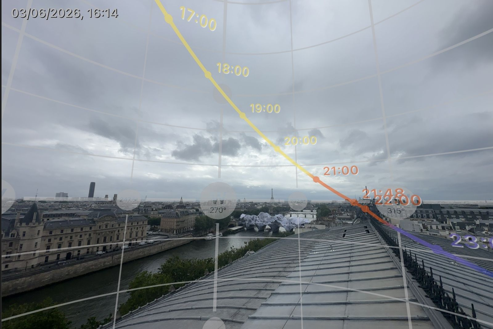
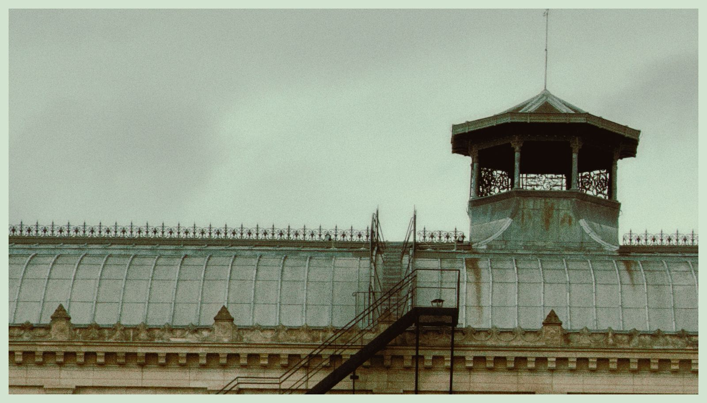
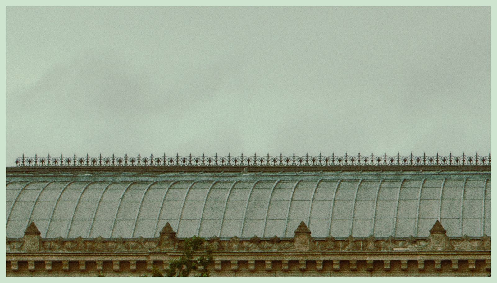
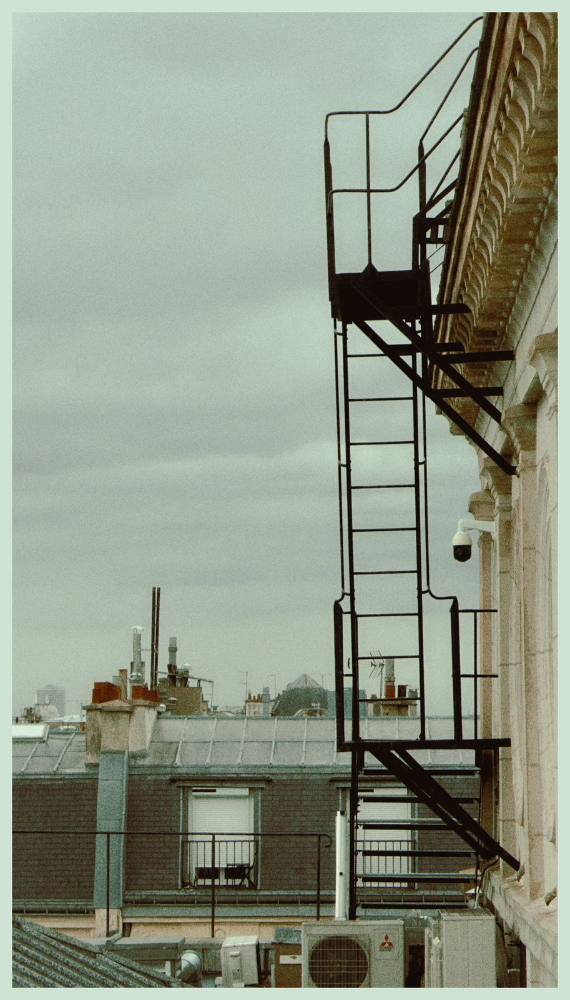

J4 J4 — Jeudi 25 juin 2026
📋 Spots du jour (2)
Spot 10 — Bateau
📋 Vue d'ensemble — photos du spot
| ✓ | # | Titre | Focale |
|---|---|---|---|
| 10.1 | Travelling quais | — | |
| 10.2 | Portrait Johan sur pont du bateau | — |
📋 Brief spot (5 infos)
Horaire planning : 🌅 25/06 05H00 → 08H00 (lever du soleil absolu) — couvre uniquement la zone Passerelle Debilly ↔ Pont de Bir-Hakeim 📍 Itinéraire fluvial Seine — Pont Bir-Hakeim ↔ Passerelle Debilly
⚠️ Simone-de-Beauvoir = HORS scope bateau (trop loin en aval). Toutes les photos Simone-de-Beauvoir sont désormais dans le Spot 8 (session matinée 24/06) — sol uniquement.
- Lumière : 🔒 LOCKÉE aube absolue (lever du soleil)
- Status spot : 🎯 PÉPITE CARDINALE Cyril — débloque la zone Tour-Eiffel/Trocadéro depuis l'eau
- Statut tri-fonctionnel : 1. Point de vue JAMAIS shooté (n'importe quelle scène depuis l'eau) 2. Outil de travelling vidéo parfait (plans coulissants impossibles à pied) 3. Moyen de transport rapide entre Bir-Hakeim et Debilly 4. Débarquement possible pour shooter aussi depuis sol
- Location : 3h aube confirmé Cyril
Spots couverts par le bateau (zone restreinte aube)
- Passerelle Debilly — voir spot 7
- Pont de Bir-Hakeim — bonus depuis l'eau (lumière magique vs 09h sol — voir spot 3)
📷 Photo 10.1 — Travelling quais (vidéo principalement)
- Tag : Vidéo principalement
- Statut : ✅ ACTÉE vidéo / 🟡 WIP photo
- Setup : bateau avance, caméra dessus, Johan court sur quais en parallèle
- Plan vidéo : travelling latéral
- Photo possible : slow shutter pour effet mouvement défilement (effets sympas possibles)
📷 Photo 10.2 — Portrait Johan sur pont du bateau (Lifestyle)
- Tag : Beauty + Lifestyle
- Statut : ✅ ACTÉE (cohérent dimension lifestyle transverse)
- Composition : Johan debout sur le pont du bateau, on avance vers monuments
- Mood : portrait calme contemplatif, lifestyle pure
Récap Bateau = 2 photos identifiées + bonus angles Debilly/Bir-Hakeim depuis l'eau (travelling quais + portrait pont + angles inédits sur Debilly & Bir-Hakeim couverts par leurs spots respectifs §7 & §3)
Cross-réf DR L1 complet : 02- MEMORY_LOGS/DEEP_RESEARCH_REPORTS/2026-06-05_olympiades_simone_beauvoir_DR_L1.md
Spot 11 — Châtelet
📋 Vue d'ensemble — photos du spot
| ✓ | # | Titre | Focale |
|---|---|---|---|
| 11.1 | Depuis quai Seine en face : télé toit du théâtre | téléobjectif | |
| 11.2 | Escalier dominant la scène | — | |
| 11.3 | Passage entre 2 rambardes perpendiculaires + portraits | — | |
| 11.4 | Johan sur rambarde verticale + perspective ciel | du 70-200mm au 35mm = effets p | |
| 11.5 | Échelle bord gauche en haut du toit | — |
📋 Brief spot (7 infos)
Horaire planning : 🌇 25/06 20H00 → 23H00 (coucher de soleil)
📍 Google Maps — Position Tristan face Théâtre du Châtelet
📮 4 Quai de la Mégisserie, 75001 Paris (position depuis le quai en face — le théâtre est en face sur la rive opposée)
- Lumière : 🔒 LOCKÉE coucher de soleil
- Status spot : 🎯 DÉCOR MAJEUR — au bord Seine, proche Notre-Dame (SEUL endroit avec Notre-Dame)
- Note ambition : « iconique, Assassin's Creed, c'est la vision que j'avais moi quand on a commencé à nous parler du projet » — vision originelle Tristan
- Statut historique reconquête : Tristan voulait dropper après repérage technique restrictif → équipe (Cyril/Johan) l'a convaincu « t'inquiète il y a plein de zones grises, plein d'angles »
- Particularité commerciale : quasi JAMAIS shooté en photo = opportunité unique
- Sécurité : cordistes obligatoires + lignes de vie partout
🌅 Lecture lumière (1 image)

📷 Photo 11.1 — Depuis quai Seine en face : télé toit du théâtre
- Tag : Beauty (signature graphique)
- Statut : ✅ ACTÉE (3-4 photos depuis quais)
- Position Tristan : depuis le quai Seine en face
- Focale : téléobjectif
- Sujets : Johan sur le toit + structure toit + petite rotonde + gargouilles
- Note Tristan révisée : initialement pas chaud (« un peu anonyme, on voit pas Paris »), équipe l'a convaincu
🖼️ Références 📷📷
 
📷 Photo 11.2 — Escalier dominant la scène
- Tag : Beauty
- Statut : ✅ ACTÉE
- Composition : escalier (du sol ?) → domine la scène du théâtre
- Action : « certainement le truc à faire là-dedans »
📷 Photo 11.3 — Passage entre 2 rambardes perpendiculaires + portraits
- Tag : Beauty + Lifestyle/Portrait
- Statut : ✅ ACTÉE
- Composition : passage perpendiculaire entre 2 rambardes traversant le toit
- Type : portraits Johan (lifestyle dimension transverse)
- Variante : pieds Johan de chaque bord rambarde
- Vue : DIRECTE sur scène + Notre-Dame en phase
📷 Photo 11.4 — Johan sur rambarde verticale + perspective ciel
- Tag : Beauty + Perf
- Statut : ✅ ACTÉE
- Sécurité : lignes de vie de part et d'autre + Tristan assuré par cordiste
- Composition : Johan sur rambarde verticale traversante
- Tristan position : shoot d'un côté ou de l'autre
- Focale : du 70-200mm au 35mm = effets profondeur/perspective détacher Johan dans ciel
- Mood : Johan dans le ciel signature parkour
📷 Photo 11.5 — Échelle bord gauche en haut du toit (graphique ombre chinoise)
- Tag : Beauty (graphique ombre chinoise)
- Statut : ✅ ACTÉE
- Composition : échelle latérale graphique + toits, démarque bien en ombre chinoise
- Variantes : Spiderman / Empire State Building / autre action
🖼️ Référence 📷

📌 Autres photos à explorer sur place — au-delà des 5 identifiées ci-dessus, il y a un certain nombre d'angles non listés à découvrir le jour J (25/06 soir). En particulier : vue Notre-Dame (seul spot du shoot avec Notre-Dame en arrière-plan, axe à exploiter à fond). À arbitrer terrain avec Cyril/Johan.
Récap Châtelet = 5 photos identifiées + N à explorer sur place (dont vue Notre-Dame) — Beauty : 4-5 · Perf : 2 · Lifestyle/Portrait : 1 (passage rambardes)